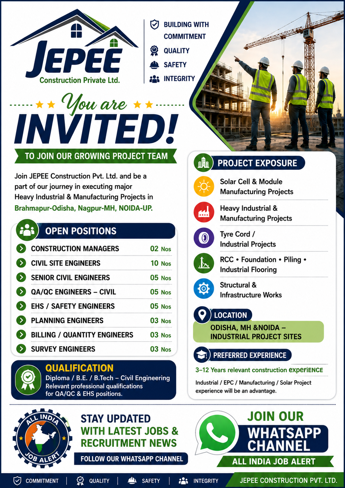

JEPEE Construction Pvt. Ltd. has announced multiple career opportunities for experienced construction and engineering professionals. The recruitment drive is focused on major Heavy Industrial and Manufacturing Projects, including industrial, EPC, solar, infrastructure, RCC, foundation, structural and related construction works.
Candidates with relevant qualifications and practical construction experience can explore the available positions mentioned in the recruitment announcement. The company is looking for professionals who can contribute to project execution, engineering, quality, safety, planning, billing, surveying and site management activities.
Company: JEPEE Construction Pvt. Ltd.
Job Type: Construction / Engineering / Industrial Projects
Locations: Odisha, Maharashtra and Noida, Uttar Pradesh
Experience: Approximately 3–12 years depending on position
Industry: Construction, EPC, Manufacturing, Infrastructure and Industrial Projects
The recruitment advertisement mentions project opportunities across Brahmapur, Odisha; Maharashtra; and Noida, Uttar Pradesh. Candidates should be prepared to work at industrial project sites and construction locations depending on the requirement of the position.
The projects are associated with large-scale industrial and manufacturing activities. Professionals who have previously worked on EPC, industrial, manufacturing, solar, RCC, foundation, piling, structural or infrastructure projects may find these opportunities particularly relevant.
JEPEE Construction's recruitment requirement covers professionals for projects involving several important areas of modern construction and industrial development. The project exposure mentioned in the recruitment poster includes Solar Cell and Module Manufacturing Projects, Heavy Industrial and Manufacturing Projects, Tyre Cord and Industrial Projects, RCC, Foundation and Piling works, Structural Works and Infrastructure Development.
Such projects require experienced professionals who understand site execution, construction planning, engineering coordination, quality control, safety management, quantity measurement and project reporting. Candidates may be required to coordinate with different departments, contractors, consultants, vendors and project management teams.
Construction Managers are responsible for supervising overall construction activities and ensuring that work progresses according to approved drawings, specifications, schedules and project requirements. Candidates applying for management positions should have strong leadership, coordination and site-management skills.
The role may involve monitoring manpower, materials, equipment, subcontractors and construction activities. The professional may also coordinate with engineering, planning, quality and safety teams to ensure smooth project execution.
Civil Site Engineers will be involved in day-to-day construction and site execution activities. The responsibilities may include checking drawings, supervising civil works, monitoring measurements, coordinating with contractors and ensuring that construction is completed according to approved specifications.
Candidates should have good knowledge of construction practices and be comfortable working at project sites. Experience in industrial or infrastructure projects can be an advantage.
Senior Civil Engineers are expected to handle important construction activities and provide technical guidance to site teams. They may be responsible for monitoring progress, checking quality, coordinating resources and solving technical issues encountered during construction.
QA/QC professionals will focus on maintaining construction quality and ensuring compliance with approved specifications, drawings and project standards. Typical activities may include inspection, documentation, quality checks, material verification, testing coordination and preparation of quality records.
Candidates with experience in civil quality assurance and quality control activities are encouraged to consider this position.
Safety professionals will be responsible for supporting safe construction operations at project sites. Responsibilities may include safety inspections, toolbox meetings, identifying unsafe conditions, maintaining safety documentation and coordinating corrective actions.
Candidates with relevant EHS, safety or construction-site experience can apply for the safety-related opportunities shown in the recruitment announcement.
Planning Engineers play an important role in project scheduling and progress monitoring. They may prepare project schedules, track actual progress against planned targets, coordinate with site teams and prepare regular progress reports.
Candidates having experience with construction planning, scheduling, project monitoring and coordination may be suitable for this position.
Billing and Quantity Engineers are responsible for measurement, quantity verification, preparation of bills, quantity take-offs and coordination related to project commercial activities. Professionals should understand construction measurements and basic billing procedures.
Experience in quantity surveying, construction billing, BOQ preparation, measurement and subcontractor billing can be useful for this role.
Survey Engineers are involved in setting out, checking levels, alignment, measurements and other surveying activities required for construction. Candidates should have practical knowledge of construction surveying and be comfortable working at project sites.
The recruitment poster indicates Diploma, B.E. and B.Tech Civil Engineering qualifications for relevant engineering positions. Candidates applying for QA/QC and EHS positions should have qualifications and experience relevant to their respective fields.
Candidates should carefully match their educational qualification and professional experience with the position before applying. The experience requirement can vary depending on the job role, with the recruitment announcement indicating approximately 3 to 12 years of relevant construction experience for different positions.
Candidates having experience in industrial, EPC, manufacturing or solar projects may receive preference where relevant. Experience in RCC works, foundation works, piling, structural construction and infrastructure projects can also be valuable for the listed positions.
Professionals should highlight their relevant project experience, designation, total experience, current location and technical skills in their CV. This can help the recruitment team quickly understand the candidate's suitability for the position.
Large industrial and infrastructure projects provide professionals with opportunities to work on technically challenging construction activities. Candidates can gain exposure to large project teams, modern construction practices, engineering coordination, quality systems, safety procedures and project execution.
These vacancies may be suitable for experienced civil engineering and construction professionals who are interested in developing their careers in industrial and infrastructure projects. Applicants should carefully review the position requirements and apply only for roles matching their qualifications and experience.
Interested candidates should prepare an updated CV containing their educational qualification, total professional experience, current location, previous project experience, current designation and relevant technical skills.
The recruitment poster provides the application email address: kaushal@jepee.in.
Interested candidates may send their updated CV to:
Email: kaushal@jepee.in
Candidates should mention the position applied for, total experience and current location while submitting their application.
This recruitment opportunity can be useful for professionals looking for careers in civil construction, industrial projects, EPC, manufacturing, infrastructure and related engineering sectors. With multiple positions available across different functions, candidates from civil engineering, quality, safety, planning, billing and surveying backgrounds can review the vacancies and identify the position that best matches their profile.
Before applying, candidates are advised to check that their qualification, experience and project background match the requirements of the selected position. An accurate and updated CV can make the application process easier and help recruiters understand the candidate's professional background.